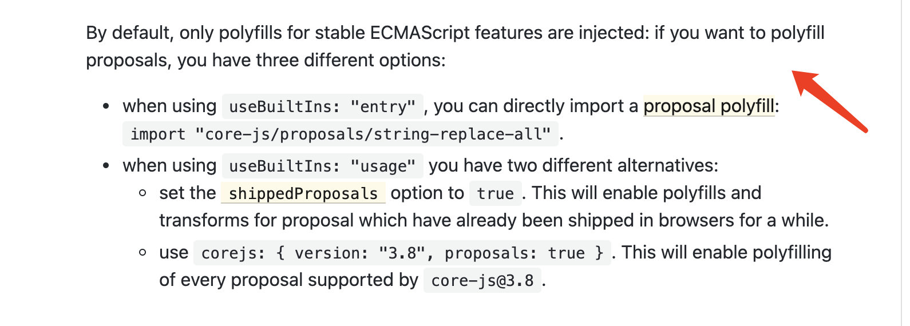

开发一个项目的时候，发现 @babel/preset-env 的配置如下：
1 | [ |
使用这种配置，没有利用 @babel/preset-env 根据 targets 自动引入 polyfill 的能力，而是开发者手动引入。
开发者要么根据项目代码一个个引入需要的 polyfill，要么全量引入 core-js 提供的所有 polyfill。前者低效、开发体验不好，而且容易遗漏出错；后者全量引入 polyfill，引入了多余的 polyfill。
useBuiltIns 还有 entry 和 usage 两个配置。entry 是根据 targets 引入浏览器需要的所有 polyfill，浏览器需要但代码不一定会用到。为了追求代码体积尽可能小，将 useBuiltIns 配置改为按需引入的 usage，只有代码里用到的才引入。（完美.jpg）
报错了 —— replaceAll is not a function
git push 将代码部署到测试环境，左点点右点点没啥问题。查看打包后体积，core-js 的引入从 400kb 降低 200kb，一股拯救世界的自豪感油然而生。
跑了一两天一直没啥问题，这可能是暴风雨前的平静吧，测试提个 bug 过来 —— 页面报错了，replaceAll is not a function。
String.prototype.replaceAll 的确是一个新的 API，是处于 stage 4 的 proposal，即将被成为 ES2021 标准。Chrome 85 才开始支持 replaceAll，那么对于 targets 配置为 43 的 项目，需要引入 replaceAll 的 polyfill。
但前面已经配置了 useBuiltIns: 'usage' 按代码使用引入 polyfill 了，怎么没引入呢？replaceAll 有什么特别的吗？我跑去看 core-js 的 replaceAll polyfill 代码，esnext 引起了我的注意。对比下 includes polyfill 代码，使用的是 es。

proposal stage 分类
es 和 esnext 有什么呢？前者表示已经成为 ECMAScript 标准，后者表示仍处于提案阶段，即 proposal stage。proposal stage 又分为四个阶段
- stage 0: 方案提出来了，将来有可能会成为规范
- stage 1: 有例子出来了
- stage 2: 用比较规范的语言描述方案的语法和语义
- stage 3: 有浏览器开始支持，可以从开发者收集反馈了
- stage 4: 下一个 ECMAScript 标准将纳入该方案
解决办法
回到问题，@babel-preset-env 没有引入 replaceAll 是对处于 stage 4 的 proposal 有什么特殊处理吗？跑去看 文档。
从头开始看冗长的文档，看了二十分钟依然没有什么发现，觉得这样来太慢，应该从目录入手定位到具体章节。扫了一眼，居然有个叫 shippedProposals 的参数。
shippedProposals 设置为 true,会引入浏览器已经支持的处于 proposal stage 的 API 的 polyfill。再品品这句话，也就是说 @babel-preset-env 默认不会对处于 proposal stage 的 API 的 polyfill，所以问题就在这里。
将 shippedProposals 设置为 true，重新编译一下，居然还是报错 replaceAll is not a function。配置正确的前提下，那只能说明 Babel 依然认为 处于 stage 4 的 replaceAll 还没有浏览器支持。
找到 Babel 处理 shippedProposals 代码，在这里 内置功能列表 的确没有 replaceAll。
到目前为止问题还没有解决，只能继续翻看 @babel-preset-env 的文档有什么解决办法，最糟糕的方法就是配置手动引入 replaceAll 的 polyfill。看啊看，终于在 core-js 配置看到以下的说明：

翻译过来就是：
- @babel-preset-env 默认是不会给 proposal 打补丁的
这个有点坑，文档说自己功能强大前面说开发者不用去管理 polyfill，后面留这么大的雷，不支持 polyfill proposals。至少应该在文档最前面说清楚。 - 可以使用
shippedProposals配置引入浏览器已经支持的 proposal
这也是坑，一旦 Babel 认为浏览器还不支持，就不会引入，配置也解决不了问题，例如 replaceAll。这个选项可以废弃啊，不然会给开发者一些误导。 - 可以配置
corejs选项的proposals为 true
只要当前 core-js 支持的 polyfill，就能引入。
最后，本问题使用最后一个方案解决，配置如下。
1 | [ |